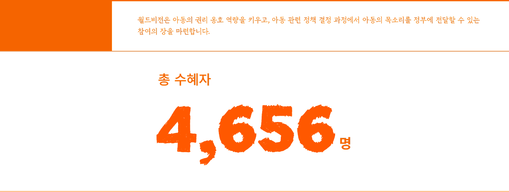
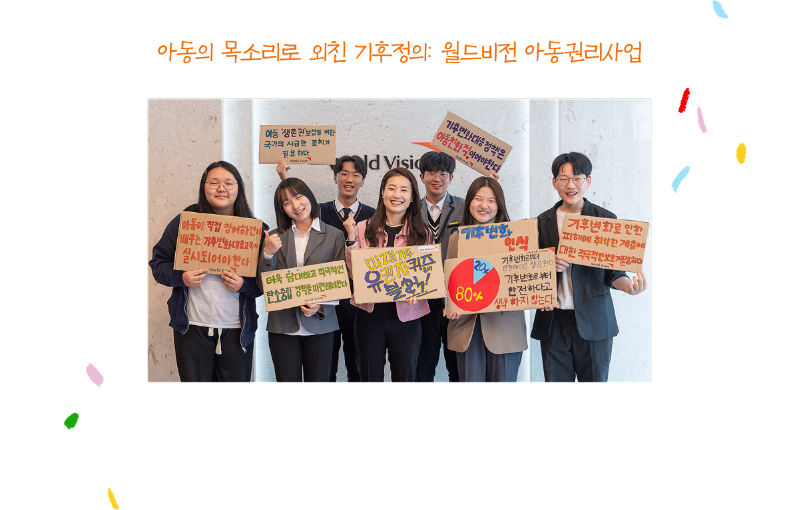
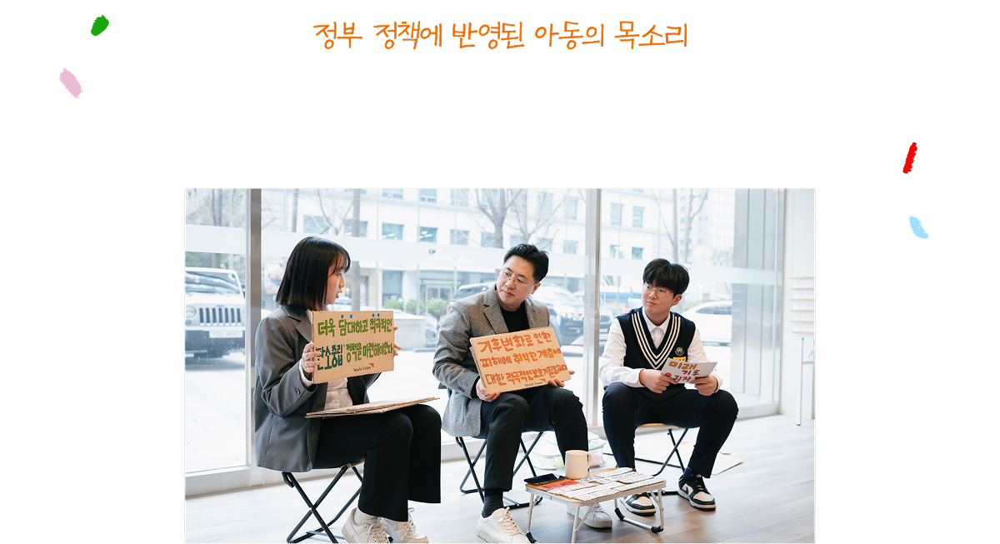
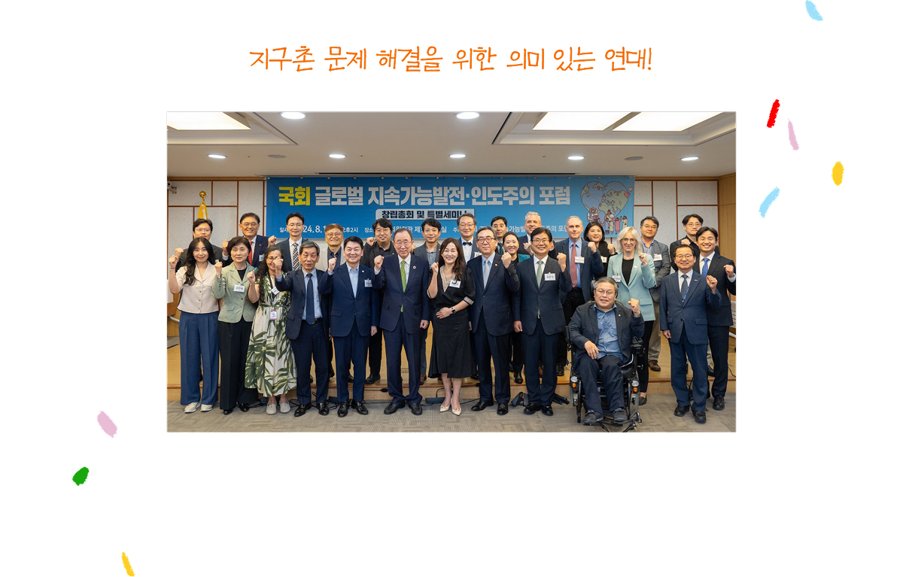
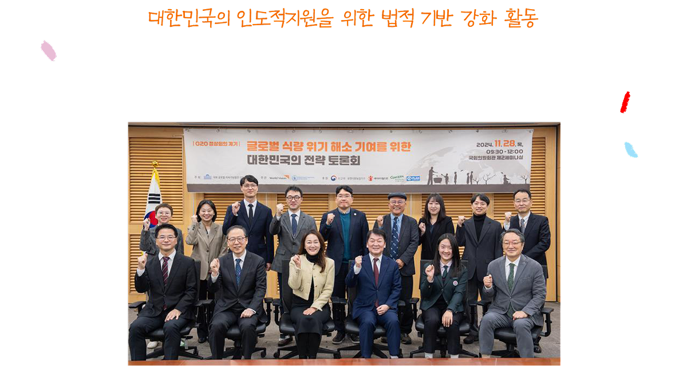
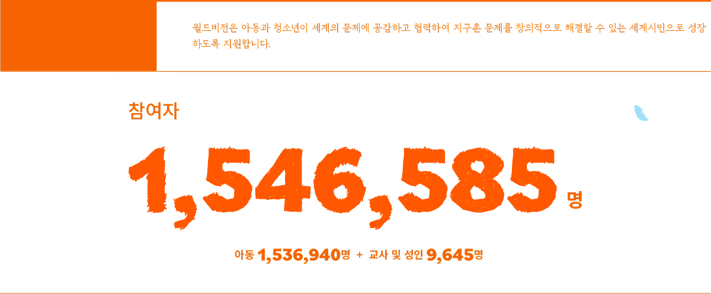
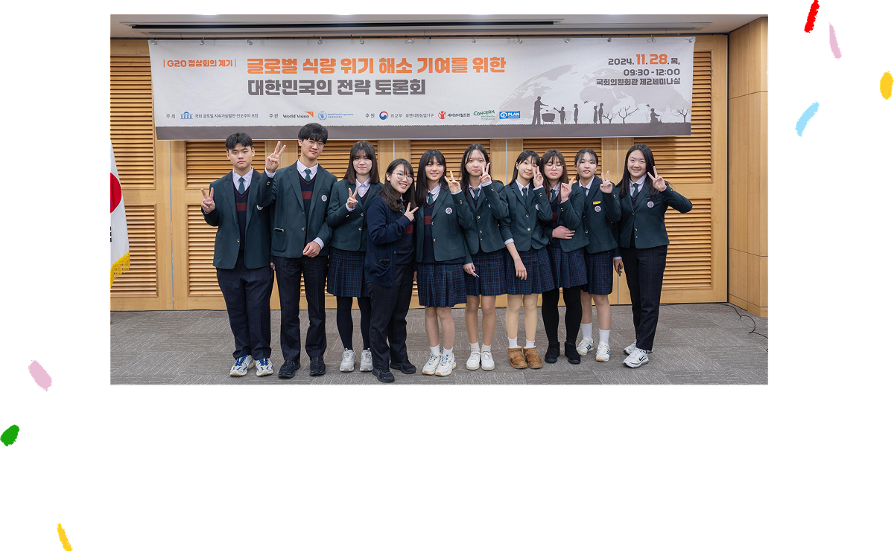
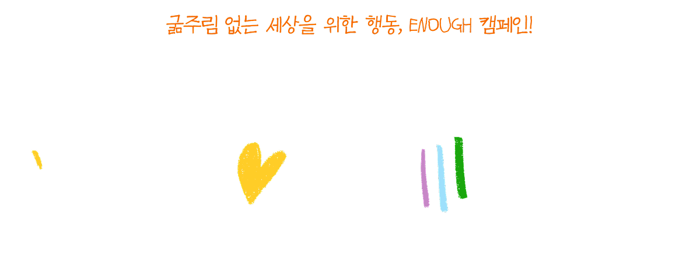
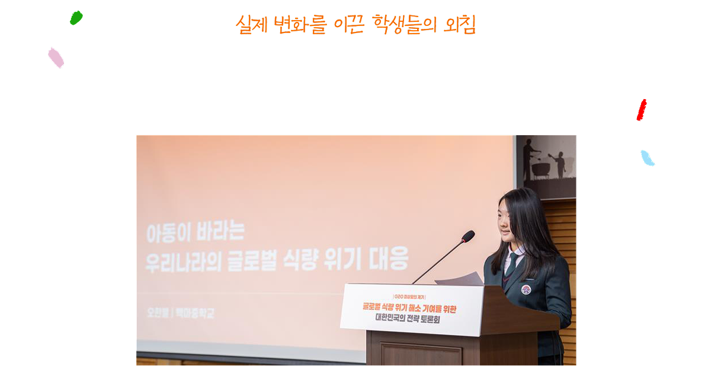

2025 SPRING VOL. 254

아동권리사업

월드비전은 아동의 권리를 보호하고 목소리를 대변하기 위해 아동과 시민이 함께 사회 변화를 이끄는 옹호사업을 진행하고 있습니다. 특히,
기후정의 옹호 프로젝트를 통해 아동들은 기후위기 대응 시 아동 권리 보장의 중요성을 알리고 변화를 이끌어냈습니다.

월드비전 아동권리대표단은 22대 국회의원 후보들과 간담회를 열어 기후 위기 대응 시 아동 권리 보장을
약속 받았습니다.
폭염이 가장 심한 지역 중 하나인 경상북도 의성군에 기후위기 적응 대책을 제안, 실질적인 변화를
이끌어 내는 데 기여했습니다.
환경부는 ‘제4차 국가 기후적응 대책’ 수립과정에 아동권리대표단이 공식 초청되어 아동의 관점과 목소리를 전달할 수 있는 기회가
주어졌습니다. 이는 우리나라 기후정책에 아동 참여가 보장되는 의미 있는 변화입니다.

![[월드비전 아동권리대표단] 월드비전 아동권리대표단은 ‘기후위기가 아동권리에 미치는 영향 인식 조사’를 통해 대한민국 아동 1,038명의 의견을 수집하고, 기후위기로 침해받는 아동 권리를 보호하기 위한 정책 제언을 22대 국회의원 후보들에게 전달했습니다. 또한, ‘기후정의 옹호 프로젝트’를 통해 경상북도 의성군을 기후위기 취약지역으로 선정하고 현장 조사를 진행하여 주민과 아동들의 의견을 반영한 정책 제언을 의성군 제3차 기후위기 적응대책에 반영될 수 있도록 전달했습니다.[월드비전 아동총회] 월드비전 아동총회는 아동이 주도적으로 모은 의견이 정부 정책 과정에 개진될 수 있도록 참여의 기회를 제공하는 활동입니다. 2024년 총회에서는 ‘기후위기 적응과 아동 권리’를 주제로 아동 권리에 대한 이해를 높이고, 지역별 기후위기 적응 의견서를 작성했습니다. 또한, 2025 아동권리대표단 활동으로 이어질 기반을 마련하고, 아동권리대표단 6기를 선출하는 시간을 가졌습니다.](images/advocacy/sec04textBg.png)
공공정책개선활동
월드비전은 국내외 아동과 취약계층의 권리 증진을 위한 사회 제도 개선을 위해 국회 및 정부와 활발히 협력하고 있습니다.
특히 기후변화, 불평등, 분쟁, 식량위기 등 글로벌 복합위기 극복을 위해 대한민국이 국제사회에서 영향력 있는 역할을 할 수 있는 법과
제도가 마련되도록 국회 및 정부와 협력하고 있습니다.

22대 국회 출범과 함께 글로벌 복합위기 해결을 위한 대한민국의 역할을 모색하는 ‘국회 글로벌
지속가능발전·인도주의 포럼’ 설립에 기여하고 참여했습니다.
이 포럼은 빈곤, 불평등, 기후위기, 분쟁 등 글로벌 문제 해결을 위해 국회와 함께 정부, 시민사회,
국제기구, 학계, 기업 등의 활발한 협력을 기대하며 출발했습니다.
월드비전은 글로벌 인도주의 위기에 대한민국이 국제사회에서 더 큰 역할을 할 수 있도록 국회와 함께
우리나라 인도적지원의 법적 기반 강화 활동을 이어왔습니다.

세계시민학교

월드비전의 세계시민학교는 청소년들이 글로벌 문제를 이해하고, 적극적으로 행동하는 세계시민으로 성장할 수 있도록 돕고 있습니다.
2024년에는 전국 12,500여 명의 학생이 글로벌 식량위기 해결을 위한 ENOUGH 캠페인에 참여해 큰 변화를 이끌었습니다.

“굶주림 없는 세상을 위해, 우리도 행동합니다!”
학생들은 세계 식량위기의 심각성을 배우고 해결 방안을 고민하며 목소리를 냈습니다.

학생들은 세계 식량위기의 심각성을 배우고 해결 방안을 고민하며 목소리를 냈습니다.
캠페인에서 모인 학생들의 의견과 서명은 대한민국 정부에 전달되었습니다.
국회에서도 대한민국의 주도적 역할을 촉구하는 뜻깊은 움직임이 이어졌습니다.
학생들의 열정은 대한민국 정부의 결단으로 이어졌습니다. G20 브라질 정상 회의에서 대한민국 정부는 ‘Global Alliance
against Hunger and Poverty’에 가입하겠다는 공약을 발표하며 국제사회 문제 해결에 리더십을 발휘했습니다.

![[교사용 세계시민교육교재 보급] 월드비전은 대한민국 아동청소년들이 세계와 소통하고 더불어 살아가는 세계시민으로 성장할 수 있도록 학교, 교사와 협력하여 세계시민교육을 진행합니다. 연결된 세계, 기후위기, 환경, 인권, 불평등, 국제협력, 식량과 기아, 상생과 평화 등 다양한 주제로 수업용 교재를 개발하여 교사들에게 보급하고 있습니다. 참여 아동, 청소년 1,161,774명
[전문강사 학교 파견 교육] 월드비전은 학교의 요청에 따라 세계시민교육 전문 강사를 파견하여 학습자 맞춤형 수업을 진행, 교육 효과를 높이고 있습니다. 참여 아동, 청소년 131,994명
[ENOUGH 캠페인] 월드비전은 ‘Enough 캠페인’을 통해 청소년들이 글로벌 식량위기를 이해하고 해결 방안을 모아 G20 정상 회의에서 한국 정부 대표단에 전달함으로써, 정부의 적극적인 역할을 촉구했습니다. 이 캠페인은 2024-2026년까지 글로벌 식량위기 대응을 위한 월드비전 글로벌 캠페인입니다. 참여 아동, 청소년 12,495명
[교실에서 찾은 희망] 월드비전은 ‘교실에서 찾은 희망 캠페인’을 통해 학교 현장에서 증가하는 사이버 학교폭력을 예방하고, 학생 참여형 교육과 활동으로 평화로운 교실 문화를 조성했습니다. 이를 통해 아이들이 스스로 사이버 학교 폭력에 대응할 수 있는 역량을 강화했습니다. 참여아동 39,128명](images/advocacy/sec11textbg.png)